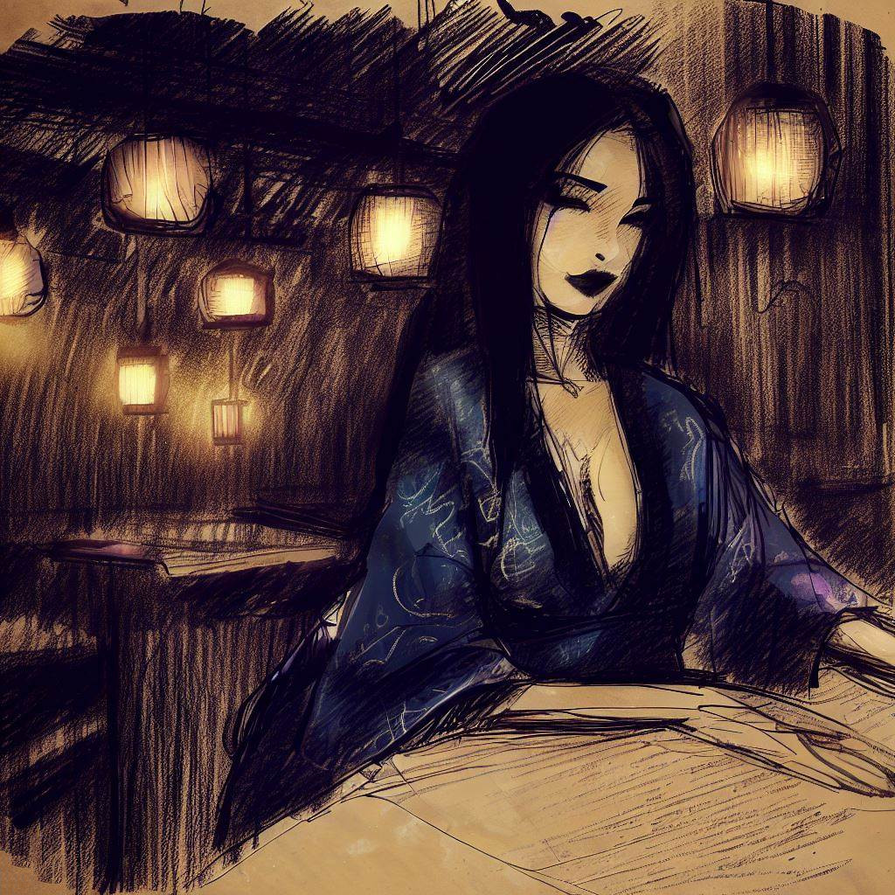
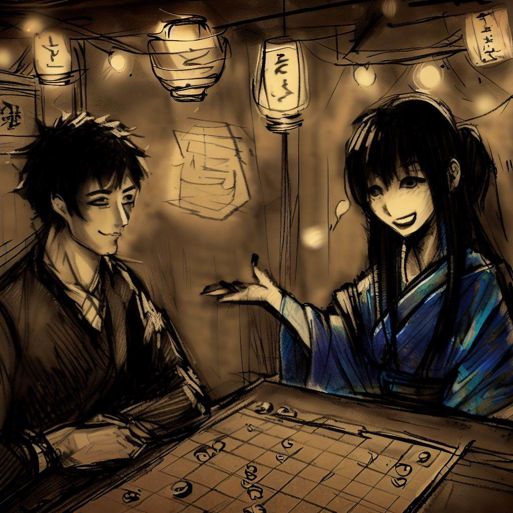
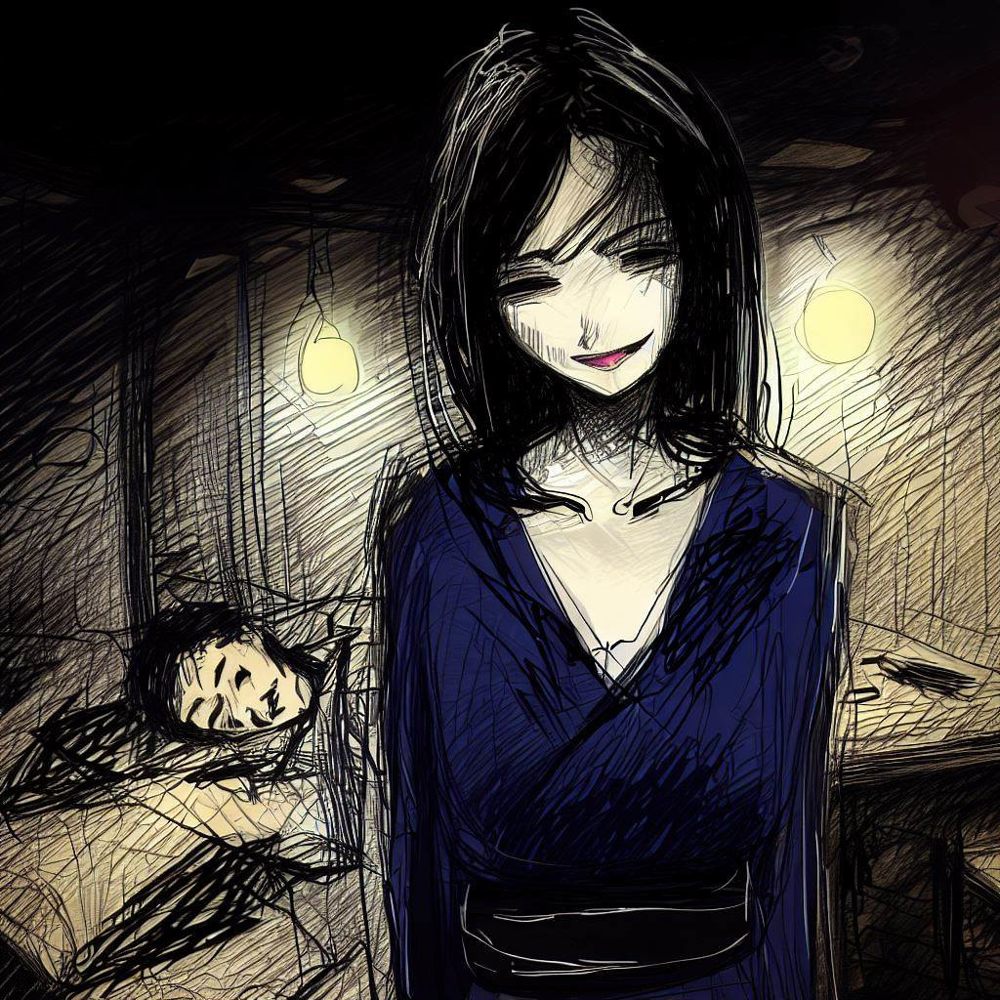

کومایو: اوگی کے کھیل کی مستند گونج
میں کومایو کا شکریہ ادا کرنا چاہتا ہوں. اس نے مجھے ایک بہت دلچسپ حکمت عملی کا کھیل سکھایا. میں ہماری ملاقات کا بیان کروں گا. یہ ایک یاد ہے جو مجھے واقعی پسند ہے اور میں یہاں اسے شیئر کرنا چاہتا ہوں.
نامعلوم کی طرف راہ
دن ختم ہو گیا ہے اور میں اپنے کام سے جارہا ہوں. میں اوساکا میں ہوں اور میں تازہ شام کی ہوا لے رہا ہوں. شہر خاموش ہے اور میں امن محسوس کر رہا ہوں.

میں سڑکوں میں چل رہا ہوں۔ عمارتیں بڑی اور روشن ہیں۔ یہ رات کو خوبصورت ہوتی ہیں۔
میں ایک زندہ دل محلہ سے گزرتا ہوں جہاں ریستوران اور بات چیت کرنے والے لوگ ہوتے ہیں۔ بغیر ہمیں تھکن محسوس کریے، میں کچھ دلچسپ کرنا چاہتا ہوں۔ پھر، میں ریجنسی بار کہلاتے ایک بار کا خیال کرتا ہو
ں۔ یہ ایک جگہ ہے جہاں لوگ شوگی کھیلتے ہیں۔
مجھے بار میں داخل ہونے کی خواہش ہوتی ہے۔ میں ایک چیلنج لینا چاہتا ہوں اور تھوڑا سا آرام کرنا چاہتا ہوں۔
گیم بار
میں ریجنسی بار میں داخل ہوتا ہوں۔ یہ ایک خاموش جگہ ہے جہاں نرم روشنی ہوتی ہے۔ لوگ یہاں شوگی کھیل رہے ہوتے ہیں۔
میں ایک گلاس ساکی کا حکم دیتا ہوں۔ میں ارد گرد دیکھتا ہوں۔ میں لکڑی اور عود کی خوشبو محسوس کرتا ہوں۔ میں شوگی کے ٹکڑے ہلتے ہوئے اور لوگوں کو ہلکی آواز میں بات چیت کرتے ہوئے سنتا ہوں۔
مرد و خواتین ہر عمر کے شوگی کھیل رہے ہیں۔ وہ اپنے کھیل پر توجہ مرکوز ہیں۔ وہ ہر چال کے ساتھ خوش، اداس یا گھبرائے ہوئے نظر آتے ہیں۔
میں ایک خواتین کو ایک میز پر تنہا دیکھتا ہوں۔ وہ خوبصورت اور پر امن ہیں۔ میں ان کے بارے میں جاننے میں دلچسپی رکھتا ہوں۔ میں ان کے پاس جاتا ہوں، میں مسکراتا ہوں اور میں
ان سے پوچھتا ہوں کہ کیا وہ مجھ سے شوگی کھیلنا چاہیں گی۔

ایک مختلف کھیل
جب میں نے کھیلنے کا پوچھا تو انہوں نے مسکرا دیا۔
وہ ایک کھیل کی تختی نکالتی ہیں۔ یہ ایک کپڑے کے نیچے چھپی ہوئی تھی۔ میں حیران ہوا۔ تختی معمول سے چھوٹی تھی۔ اس میں مربعوں اور ٹکڑوں کی تعداد کم تھی۔ عمومی شوگی کی طرح 9x9 مربع کے بجائے، اس میں 8x8 مربع تھے۔ ہر کھلاڑی کے لئے صرف 18 ٹکڑے تھے۔ میں سوال پوچھنے سے پہلے، انہوں نے تشریح شروع کر دی۔ انہوں نے کہا کہ اس کھیل کا نام اوگی ہے۔

وہ ایک خصوصی ٹکڑے کے بارے میں بات کرتی ہیں۔ یہ پرنسس کا ٹکڑہ تھا۔ انہوں نے کہا کہ یہ ٹکڑہ کھیل کو زیادہ گتھم گتھا بناتی ہے۔ جب انہوں نے میرا حیران ہونا دیکھا، تو انہوں نے مسکرا دیا
اور کہا کہ میں تیار ہوں کہ میں یہ کھیل کیسے کھیلوں۔
چیلنج کا آغاز
گھڑی کا وقت گزرتا ہے۔ خاموشی صرف ٹکڑوں کے بورڈ پر ہلنے کی آواز سے ہی ٹوٹتی ہے۔ ٹکڑے بہادری سے حرکت کرتے ہیں۔ پرنسس کھیل کو قیادت دیتی ہے۔ کھیل کی خاموشی کمرہ بھر لیتی ہے۔ یہ بہت شدید ہے۔
خاتون کھیل بہت اچھی طرح کھیلتی ہیں۔ جب وہ میرے ٹکڑے کو پکڑتی ہیں، تو وہ اسے بورڈ پر واپس رکھتی ہیں اور اسے اپنے ہی ٹکڑے کی حیثیت سے کھیلتی ہیں۔ ہر چال جو وہ چلتی ہیں، میرے لئے ایک سبق ہوتی ہے۔ وہ ہر ٹکڑے کو بہت توجہ سے دیکھتی ہیں۔
میں کھیلتا رہتا ہوں۔ میں اپنے ٹکڑے بہت طاقت سے حرکت دیتا ہوں۔ میں اپنے بادشاہ کی حفاظت کرتا ہوں۔ لیکن ہر چال کے ساتھ، میں اور تھکتا جاتا ہوں۔ میری آنکھیں بھاری ہو رہی ہیں۔
آخر کار، میں اب اور بیدار نہیں رہ سکتا۔ میں بہت تھک چکا ہوں۔ سب کچ
ھ کالا ہو رہا ہے۔ آخری چیز جو میں دیکھتا ہوں وہ خاتون کی مسکان ہے۔ وہ بہت خوش ہیں۔

اچانک بیداری
میں سویا ہوا تھا، اندھیرے میں کہو گیا۔ پھر، دھیرے دھیرے، میں بیدار ہوتا ہوں۔ یہ صبح ہو چکی تھی۔ میں اپنی آنکھیں کھولتا ہوں۔ بار میں بہت کم تبدیلی ہوئی ہوتی ہے۔
گیم بورڈ اب بھی وہاں ہوتا ہے، بالکل اسی طرح جیسا کہ پچھلے دن تھا۔ لیکن خاتون وہاں نہیں تھیں۔ وہ چلی گئی تھیں۔ ان کی غیر موجودگی نے ایک خالی جگہ چھوڑ دی تھی۔ بار بہت خاموش تھا۔
میں نے گیم بورڈ کے پاس ایک کاغذ کا ٹکڑہ دیکھا۔ میں نے کاغذ اٹھایا۔ اس پر ایک لفظ تھا: "شکریہ"۔ اور ایک نام: "کومایو"۔ یہ نام خاتون کی آخری یاد تھی۔ میں نے ان کے ساتھ ریجنسی بار میں اوگی کھیلتے ہوئے ایک حیرت انگیز شام گزاری تھی۔